Teach StableDiffusion new concepts via Textual Inversion
Authors: Ian Stenbit, lukewood
Date created: 2022/12/09
Last modified: 2022/12/09
Description: Learning new visual concepts with KerasCV's StableDiffusion implementation.

Textual Inversion
Since its release, StableDiffusion has quickly become a favorite amongst the generative machine learning community. The high volume of traffic has led to open source contributed improvements, heavy prompt engineering, and even the invention of novel algorithms.
Perhaps the most impressive new algorithm being used is Textual Inversion, presented in An Image is Worth One Word: Personalizing Text-to-Image Generation using Textual Inversion.
Textual Inversion is the process of teaching an image generator a specific visual concept through the use of fine-tuning. In the diagram below, you can see an example of this process where the authors teach the model new concepts, calling them "S_*".

Conceptually, textual inversion works by learning a token embedding for a new text token, keeping the remaining components of StableDiffusion frozen.
This guide shows you how to fine-tune the StableDiffusion model shipped in KerasCV using the Textual-Inversion algorithm. By the end of the guide, you will be able to write the "Gandalf the Gray as a <my-funny-cat-token>".

First, let's import the packages we need, and create a StableDiffusion instance so we can use some of its subcomponents for fine-tuning.
!pip install -q git+https://github.com/keras-team/keras-cv.git
!pip install -q tensorflow==2.11.0
import math
import keras_cv
import numpy as np
import tensorflow as tf
from keras_cv import layers as cv_layers
from keras_cv.models.stable_diffusion import NoiseScheduler
from tensorflow import keras
import matplotlib.pyplot as plt
stable_diffusion = keras_cv.models.StableDiffusion()
By using this model checkpoint, you acknowledge that its usage is subject to the terms of the CreativeML Open RAIL-M license at https://raw.githubusercontent.com/CompVis/stable-diffusion/main/LICENSE
Next, let's define a visualization utility to show off the generated images:
def plot_images(images):
plt.figure(figsize=(20, 20))
for i in range(len(images)):
ax = plt.subplot(1, len(images), i + 1)
plt.imshow(images[i])
plt.axis("off")
Assembling a text-image pair dataset
In order to train the embedding of our new token, we first must assemble a dataset consisting of text-image pairs. Each sample from the dataset must contain an image of the concept we are teaching StableDiffusion, as well as a caption accurately representing the content of the image. In this tutorial, we will teach StableDiffusion the concept of Luke and Ian's GitHub avatars:

First, let's construct an image dataset of cat dolls:
def assemble_image_dataset(urls):
# Fetch all remote files
files = [tf.keras.utils.get_file(origin=url) for url in urls]
# Resize images
resize = keras.layers.Resizing(height=512, width=512, crop_to_aspect_ratio=True)
images = [keras.utils.load_img(img) for img in files]
images = [keras.utils.img_to_array(img) for img in images]
images = np.array([resize(img) for img in images])
# The StableDiffusion image encoder requires images to be normalized to the
# [-1, 1] pixel value range
images = images / 127.5 - 1
# Create the tf.data.Dataset
image_dataset = tf.data.Dataset.from_tensor_slices(images)
# Shuffle and introduce random noise
image_dataset = image_dataset.shuffle(50, reshuffle_each_iteration=True)
image_dataset = image_dataset.map(
cv_layers.RandomCropAndResize(
target_size=(512, 512),
crop_area_factor=(0.8, 1.0),
aspect_ratio_factor=(1.0, 1.0),
),
num_parallel_calls=tf.data.AUTOTUNE,
)
image_dataset = image_dataset.map(
cv_layers.RandomFlip(mode="horizontal"),
num_parallel_calls=tf.data.AUTOTUNE,
)
return image_dataset
Next, we assemble a text dataset:
MAX_PROMPT_LENGTH = 77
placeholder_token = "<my-funny-cat-token>"
def pad_embedding(embedding):
return embedding + (
[stable_diffusion.tokenizer.end_of_text] * (MAX_PROMPT_LENGTH - len(embedding))
)
stable_diffusion.tokenizer.add_tokens(placeholder_token)
def assemble_text_dataset(prompts):
prompts = [prompt.format(placeholder_token) for prompt in prompts]
embeddings = [stable_diffusion.tokenizer.encode(prompt) for prompt in prompts]
embeddings = [np.array(pad_embedding(embedding)) for embedding in embeddings]
text_dataset = tf.data.Dataset.from_tensor_slices(embeddings)
text_dataset = text_dataset.shuffle(100, reshuffle_each_iteration=True)
return text_dataset
Finally, we zip our datasets together to produce a text-image pair dataset.
def assemble_dataset(urls, prompts):
image_dataset = assemble_image_dataset(urls)
text_dataset = assemble_text_dataset(prompts)
# the image dataset is quite short, so we repeat it to match the length of the
# text prompt dataset
image_dataset = image_dataset.repeat()
# we use the text prompt dataset to determine the length of the dataset. Due to
# the fact that there are relatively few prompts we repeat the dataset 5 times.
# we have found that this anecdotally improves results.
text_dataset = text_dataset.repeat(5)
return tf.data.Dataset.zip((image_dataset, text_dataset))
In order to ensure our prompts are descriptive, we use extremely generic prompts.
Let's try this out with some sample images and prompts.
train_ds = assemble_dataset(
urls=[
"https://i.imgur.com/VIedH1X.jpg",
"https://i.imgur.com/eBw13hE.png",
"https://i.imgur.com/oJ3rSg7.png",
"https://i.imgur.com/5mCL6Df.jpg",
"https://i.imgur.com/4Q6WWyI.jpg",
],
prompts=[
"a photo of a {}",
"a rendering of a {}",
"a cropped photo of the {}",
"the photo of a {}",
"a photo of a clean {}",
"a dark photo of the {}",
"a photo of my {}",
"a photo of the cool {}",
"a close-up photo of a {}",
"a bright photo of the {}",
"a cropped photo of a {}",
"a photo of the {}",
"a good photo of the {}",
"a photo of one {}",
"a close-up photo of the {}",
"a rendition of the {}",
"a photo of the clean {}",
"a rendition of a {}",
"a photo of a nice {}",
"a good photo of a {}",
"a photo of the nice {}",
"a photo of the small {}",
"a photo of the weird {}",
"a photo of the large {}",
"a photo of a cool {}",
"a photo of a small {}",
],
)
On the importance of prompt accuracy
During our first attempt at writing this guide we included images of groups of these cat dolls in our dataset but continued to use the generic prompts listed above. Our results were anecdotally poor. For example, here's cat doll gandalf using this method:

It's conceptually close, but it isn't as great as it can be.
In order to remedy this, we began experimenting with splitting our images into images of singular cat dolls and groups of cat dolls. Following this split, we came up with new prompts for the group shots.
Training on text-image pairs that accurately represent the content boosted the quality of our results substantially. This speaks to the importance of prompt accuracy.
In addition to separating the images into singular and group images, we also remove some inaccurate prompts; such as "a dark photo of the {}"
Keeping this in mind, we assemble our final training dataset below:
single_ds = assemble_dataset(
urls=[
"https://i.imgur.com/VIedH1X.jpg",
"https://i.imgur.com/eBw13hE.png",
"https://i.imgur.com/oJ3rSg7.png",
"https://i.imgur.com/5mCL6Df.jpg",
"https://i.imgur.com/4Q6WWyI.jpg",
],
prompts=[
"a photo of a {}",
"a rendering of a {}",
"a cropped photo of the {}",
"the photo of a {}",
"a photo of a clean {}",
"a photo of my {}",
"a photo of the cool {}",
"a close-up photo of a {}",
"a bright photo of the {}",
"a cropped photo of a {}",
"a photo of the {}",
"a good photo of the {}",
"a photo of one {}",
"a close-up photo of the {}",
"a rendition of the {}",
"a photo of the clean {}",
"a rendition of a {}",
"a photo of a nice {}",
"a good photo of a {}",
"a photo of the nice {}",
"a photo of the small {}",
"a photo of the weird {}",
"a photo of the large {}",
"a photo of a cool {}",
"a photo of a small {}",
],
)

Looks great!
Next, we assemble a dataset of groups of our GitHub avatars:
group_ds = assemble_dataset(
urls=[
"https://i.imgur.com/yVmZ2Qa.jpg",
"https://i.imgur.com/JbyFbZJ.jpg",
"https://i.imgur.com/CCubd3q.jpg",
],
prompts=[
"a photo of a group of {}",
"a rendering of a group of {}",
"a cropped photo of the group of {}",
"the photo of a group of {}",
"a photo of a clean group of {}",
"a photo of my group of {}",
"a photo of a cool group of {}",
"a close-up photo of a group of {}",
"a bright photo of the group of {}",
"a cropped photo of a group of {}",
"a photo of the group of {}",
"a good photo of the group of {}",
"a photo of one group of {}",
"a close-up photo of the group of {}",
"a rendition of the group of {}",
"a photo of the clean group of {}",
"a rendition of a group of {}",
"a photo of a nice group of {}",
"a good photo of a group of {}",
"a photo of the nice group of {}",
"a photo of the small group of {}",
"a photo of the weird group of {}",
"a photo of the large group of {}",
"a photo of a cool group of {}",
"a photo of a small group of {}",
],
)

Finally, we concatenate the two datasets:
train_ds = single_ds.concatenate(group_ds)
train_ds = train_ds.batch(1).shuffle(
train_ds.cardinality(), reshuffle_each_iteration=True
)
Adding a new token to the text encoder
Next, we create a new text encoder for the StableDiffusion model and add our new
embedding for '
tokenized_initializer = stable_diffusion.tokenizer.encode("cat")[1]
new_weights = stable_diffusion.text_encoder.layers[2].token_embedding(
tf.constant(tokenized_initializer)
)
# Get len of .vocab instead of tokenizer
new_vocab_size = len(stable_diffusion.tokenizer.vocab)
# The embedding layer is the 2nd layer in the text encoder
old_token_weights = stable_diffusion.text_encoder.layers[
2
].token_embedding.get_weights()
old_position_weights = stable_diffusion.text_encoder.layers[
2
].position_embedding.get_weights()
old_token_weights = old_token_weights[0]
new_weights = np.expand_dims(new_weights, axis=0)
new_weights = np.concatenate([old_token_weights, new_weights], axis=0)
Let's construct a new TextEncoder and prepare it.
# Have to set download_weights False so we can init (otherwise tries to load weights)
new_encoder = keras_cv.models.stable_diffusion.TextEncoder(
keras_cv.models.stable_diffusion.stable_diffusion.MAX_PROMPT_LENGTH,
vocab_size=new_vocab_size,
download_weights=False,
)
for index, layer in enumerate(stable_diffusion.text_encoder.layers):
# Layer 2 is the embedding layer, so we omit it from our weight-copying
if index == 2:
continue
new_encoder.layers[index].set_weights(layer.get_weights())
new_encoder.layers[2].token_embedding.set_weights([new_weights])
new_encoder.layers[2].position_embedding.set_weights(old_position_weights)
stable_diffusion._text_encoder = new_encoder
stable_diffusion._text_encoder.compile(jit_compile=True)
Training
Now we can move on to the exciting part: training!
In TextualInversion, the only piece of the model that is trained is the embedding vector. Let's freeze the rest of the model.
stable_diffusion.diffusion_model.trainable = False
stable_diffusion.decoder.trainable = False
stable_diffusion.text_encoder.trainable = True
stable_diffusion.text_encoder.layers[2].trainable = True
def traverse_layers(layer):
if hasattr(layer, "layers"):
for layer in layer.layers:
yield layer
if hasattr(layer, "token_embedding"):
yield layer.token_embedding
if hasattr(layer, "position_embedding"):
yield layer.position_embedding
for layer in traverse_layers(stable_diffusion.text_encoder):
if isinstance(layer, keras.layers.Embedding) or "clip_embedding" in layer.name:
layer.trainable = True
else:
layer.trainable = False
new_encoder.layers[2].position_embedding.trainable = False
Let's confirm the proper weights are set to trainable.
all_models = [
stable_diffusion.text_encoder,
stable_diffusion.diffusion_model,
stable_diffusion.decoder,
]
print([[w.shape for w in model.trainable_weights] for model in all_models])
[[TensorShape([49409, 768])], [], []]
Training the new embedding
In order to train the embedding, we need a couple of utilities. We import a NoiseScheduler from KerasCV, and define the following utilities below:
sample_from_encoder_outputsis a wrapper around the base StableDiffusion image encoder which samples from the statistical distribution produced by the image encoder, rather than taking just the mean (like many other SD applications)get_timestep_embeddingproduces an embedding for a specified timestep for the diffusion modelget_position_idsproduces a tensor of position IDs for the text encoder (which is just a series from[1, MAX_PROMPT_LENGTH])
# Remove the top layer from the encoder, which cuts off the variance and only returns
# the mean
training_image_encoder = keras.Model(
stable_diffusion.image_encoder.input,
stable_diffusion.image_encoder.layers[-2].output,
)
def sample_from_encoder_outputs(outputs):
mean, logvar = tf.split(outputs, 2, axis=-1)
logvar = tf.clip_by_value(logvar, -30.0, 20.0)
std = tf.exp(0.5 * logvar)
sample = tf.random.normal(tf.shape(mean))
return mean + std * sample
def get_timestep_embedding(timestep, dim=320, max_period=10000):
half = dim // 2
freqs = tf.math.exp(
-math.log(max_period) * tf.range(0, half, dtype=tf.float32) / half
)
args = tf.convert_to_tensor([timestep], dtype=tf.float32) * freqs
embedding = tf.concat([tf.math.cos(args), tf.math.sin(args)], 0)
return embedding
def get_position_ids():
return tf.convert_to_tensor([list(range(MAX_PROMPT_LENGTH))], dtype=tf.int32)
Next, we implement a StableDiffusionFineTuner, which is a subclass of keras.Model
that overrides train_step to train the token embeddings of our text encoder.
This is the core of the Textual Inversion algorithm.
Abstractly speaking, the train step takes a sample from the output of the frozen SD image encoder's latent distribution for a training image, adds noise to that sample, and then passes that noisy sample to the frozen diffusion model. The hidden state of the diffusion model is the output of the text encoder for the prompt corresponding to the image.
Our final goal state is that the diffusion model is able to separate the noise from the sample using the text encoding as hidden state, so our loss is the mean-squared error of the noise and the output of the diffusion model (which has, ideally, removed the image latents from the noise).
We compute gradients for only the token embeddings of the text encoder, and in the train step we zero-out the gradients for all tokens other than the token that we're learning.
See in-line code comments for more details about the train step.
class StableDiffusionFineTuner(keras.Model):
def __init__(self, stable_diffusion, noise_scheduler, **kwargs):
super().__init__(**kwargs)
self.stable_diffusion = stable_diffusion
self.noise_scheduler = noise_scheduler
def train_step(self, data):
images, embeddings = data
with tf.GradientTape() as tape:
# Sample from the predicted distribution for the training image
latents = sample_from_encoder_outputs(training_image_encoder(images))
# The latents must be downsampled to match the scale of the latents used
# in the training of StableDiffusion. This number is truly just a "magic"
# constant that they chose when training the model.
latents = latents * 0.18215
# Produce random noise in the same shape as the latent sample
noise = tf.random.normal(tf.shape(latents))
batch_dim = tf.shape(latents)[0]
# Pick a random timestep for each sample in the batch
timesteps = tf.random.uniform(
(batch_dim,),
minval=0,
maxval=noise_scheduler.train_timesteps,
dtype=tf.int64,
)
# Add noise to the latents based on the timestep for each sample
noisy_latents = self.noise_scheduler.add_noise(latents, noise, timesteps)
# Encode the text in the training samples to use as hidden state in the
# diffusion model
encoder_hidden_state = self.stable_diffusion.text_encoder(
[embeddings, get_position_ids()]
)
# Compute timestep embeddings for the randomly-selected timesteps for each
# sample in the batch
timestep_embeddings = tf.map_fn(
fn=get_timestep_embedding,
elems=timesteps,
fn_output_signature=tf.float32,
)
# Call the diffusion model
noise_pred = self.stable_diffusion.diffusion_model(
[noisy_latents, timestep_embeddings, encoder_hidden_state]
)
# Compute the mean-squared error loss and reduce it.
loss = self.compiled_loss(noise_pred, noise)
loss = tf.reduce_mean(loss, axis=2)
loss = tf.reduce_mean(loss, axis=1)
loss = tf.reduce_mean(loss)
# Load the trainable weights and compute the gradients for them
trainable_weights = self.stable_diffusion.text_encoder.trainable_weights
grads = tape.gradient(loss, trainable_weights)
# Gradients are stored in indexed slices, so we have to find the index
# of the slice(s) which contain the placeholder token.
index_of_placeholder_token = tf.reshape(tf.where(grads[0].indices == 49408), ())
condition = grads[0].indices == 49408
condition = tf.expand_dims(condition, axis=-1)
# Override the gradients, zeroing out the gradients for all slices that
# aren't for the placeholder token, effectively freezing the weights for
# all other tokens.
grads[0] = tf.IndexedSlices(
values=tf.where(condition, grads[0].values, 0),
indices=grads[0].indices,
dense_shape=grads[0].dense_shape,
)
self.optimizer.apply_gradients(zip(grads, trainable_weights))
return {"loss": loss}
Before we start training, let's take a look at what StableDiffusion produces for our token.
generated = stable_diffusion.text_to_image(
f"an oil painting of {placeholder_token}", seed=1337, batch_size=3
)
plot_images(generated)
25/25 [==============================] - 19s 314ms/step
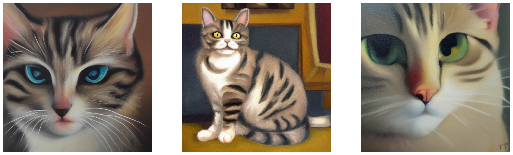
As you can see, the model still thinks of our token as a cat, as this was the seed token we used to initialize our custom token.
Now, to get started with training, we can just compile() our model like any other
Keras model. Before doing so, we also instantiate a noise scheduler for training and
configure our training parameters such as learning rate and optimizer.
noise_scheduler = NoiseScheduler(
beta_start=0.00085,
beta_end=0.012,
beta_schedule="scaled_linear",
train_timesteps=1000,
)
trainer = StableDiffusionFineTuner(stable_diffusion, noise_scheduler, name="trainer")
EPOCHS = 50
learning_rate = keras.optimizers.schedules.CosineDecay(
initial_learning_rate=1e-4, decay_steps=train_ds.cardinality() * EPOCHS
)
optimizer = keras.optimizers.Adam(
weight_decay=0.004, learning_rate=learning_rate, epsilon=1e-8, global_clipnorm=10
)
trainer.compile(
optimizer=optimizer,
# We are performing reduction manually in our train step, so none is required here.
loss=keras.losses.MeanSquaredError(reduction="none"),
)
To monitor training, we can produce a keras.callbacks.Callback to produce a few images
every epoch using our custom token.
We create three callbacks with different prompts so that we can see how they progress over the course of training. We use a fixed seed so that we can easily see the progression of the learned token.
class GenerateImages(keras.callbacks.Callback):
def __init__(
self, stable_diffusion, prompt, steps=50, frequency=10, seed=None, **kwargs
):
super().__init__(**kwargs)
self.stable_diffusion = stable_diffusion
self.prompt = prompt
self.seed = seed
self.frequency = frequency
self.steps = steps
def on_epoch_end(self, epoch, logs):
if epoch % self.frequency == 0:
images = self.stable_diffusion.text_to_image(
self.prompt, batch_size=3, num_steps=self.steps, seed=self.seed
)
plot_images(
images,
)
cbs = [
GenerateImages(
stable_diffusion, prompt=f"an oil painting of {placeholder_token}", seed=1337
),
GenerateImages(
stable_diffusion, prompt=f"gandalf the gray as a {placeholder_token}", seed=1337
),
GenerateImages(
stable_diffusion,
prompt=f"two {placeholder_token} getting married, photorealistic, high quality",
seed=1337,
),
]
Now, all that is left to do is to call model.fit()!
trainer.fit(
train_ds,
epochs=EPOCHS,
callbacks=cbs,
)
Epoch 1/50
50/50 [==============================] - 16s 318ms/step
50/50 [==============================] - 16s 318ms/step
50/50 [==============================] - 16s 318ms/step
250/250 [==============================] - 194s 469ms/step - loss: 0.1533
Epoch 2/50
250/250 [==============================] - 68s 269ms/step - loss: 0.1557
Epoch 3/50
250/250 [==============================] - 68s 269ms/step - loss: 0.1359
Epoch 4/50
250/250 [==============================] - 68s 269ms/step - loss: 0.1693
Epoch 5/50
250/250 [==============================] - 68s 269ms/step - loss: 0.1475
Epoch 6/50
250/250 [==============================] - 68s 268ms/step - loss: 0.1472
Epoch 7/50
250/250 [==============================] - 68s 268ms/step - loss: 0.1533
Epoch 8/50
250/250 [==============================] - 68s 268ms/step - loss: 0.1450
Epoch 9/50
250/250 [==============================] - 68s 268ms/step - loss: 0.1639
Epoch 10/50
250/250 [==============================] - 68s 269ms/step - loss: 0.1351
Epoch 11/50
50/50 [==============================] - 16s 316ms/step
50/50 [==============================] - 16s 316ms/step
50/50 [==============================] - 16s 317ms/step
250/250 [==============================] - 116s 464ms/step - loss: 0.1474
Epoch 12/50
250/250 [==============================] - 68s 268ms/step - loss: 0.1737
Epoch 13/50
250/250 [==============================] - 68s 269ms/step - loss: 0.1427
Epoch 14/50
250/250 [==============================] - 68s 269ms/step - loss: 0.1698
Epoch 15/50
250/250 [==============================] - 68s 270ms/step - loss: 0.1424
Epoch 16/50
250/250 [==============================] - 68s 268ms/step - loss: 0.1339
Epoch 17/50
250/250 [==============================] - 68s 268ms/step - loss: 0.1397
Epoch 18/50
250/250 [==============================] - 68s 268ms/step - loss: 0.1469
Epoch 19/50
250/250 [==============================] - 67s 267ms/step - loss: 0.1649
Epoch 20/50
250/250 [==============================] - 68s 268ms/step - loss: 0.1582
Epoch 21/50
50/50 [==============================] - 16s 315ms/step
50/50 [==============================] - 16s 316ms/step
50/50 [==============================] - 16s 316ms/step
250/250 [==============================] - 116s 462ms/step - loss: 0.1331
Epoch 22/50
250/250 [==============================] - 67s 267ms/step - loss: 0.1319
Epoch 23/50
250/250 [==============================] - 68s 267ms/step - loss: 0.1521
Epoch 24/50
250/250 [==============================] - 67s 267ms/step - loss: 0.1486
Epoch 25/50
250/250 [==============================] - 68s 267ms/step - loss: 0.1449
Epoch 26/50
250/250 [==============================] - 67s 266ms/step - loss: 0.1349
Epoch 27/50
250/250 [==============================] - 67s 267ms/step - loss: 0.1454
Epoch 28/50
250/250 [==============================] - 68s 268ms/step - loss: 0.1394
Epoch 29/50
250/250 [==============================] - 67s 267ms/step - loss: 0.1489
Epoch 30/50
250/250 [==============================] - 67s 267ms/step - loss: 0.1338
Epoch 31/50
50/50 [==============================] - 16s 315ms/step
50/50 [==============================] - 16s 320ms/step
50/50 [==============================] - 16s 315ms/step
250/250 [==============================] - 116s 462ms/step - loss: 0.1328
Epoch 32/50
250/250 [==============================] - 67s 267ms/step - loss: 0.1693
Epoch 33/50
250/250 [==============================] - 67s 266ms/step - loss: 0.1420
Epoch 34/50
250/250 [==============================] - 67s 266ms/step - loss: 0.1255
Epoch 35/50
250/250 [==============================] - 67s 266ms/step - loss: 0.1239
Epoch 36/50
250/250 [==============================] - 67s 267ms/step - loss: 0.1558
Epoch 37/50
250/250 [==============================] - 68s 267ms/step - loss: 0.1527
Epoch 38/50
250/250 [==============================] - 67s 267ms/step - loss: 0.1461
Epoch 39/50
250/250 [==============================] - 67s 267ms/step - loss: 0.1555
Epoch 40/50
250/250 [==============================] - 67s 266ms/step - loss: 0.1515
Epoch 41/50
50/50 [==============================] - 16s 315ms/step
50/50 [==============================] - 16s 315ms/step
50/50 [==============================] - 16s 315ms/step
250/250 [==============================] - 116s 461ms/step - loss: 0.1291
Epoch 42/50
250/250 [==============================] - 67s 266ms/step - loss: 0.1474
Epoch 43/50
250/250 [==============================] - 67s 267ms/step - loss: 0.1908
Epoch 44/50
250/250 [==============================] - 67s 267ms/step - loss: 0.1506
Epoch 45/50
250/250 [==============================] - 68s 267ms/step - loss: 0.1424
Epoch 46/50
250/250 [==============================] - 67s 266ms/step - loss: 0.1601
Epoch 47/50
250/250 [==============================] - 67s 266ms/step - loss: 0.1312
Epoch 48/50
250/250 [==============================] - 67s 266ms/step - loss: 0.1524
Epoch 49/50
250/250 [==============================] - 67s 266ms/step - loss: 0.1477
Epoch 50/50
250/250 [==============================] - 67s 267ms/step - loss: 0.1397
<keras.callbacks.History at 0x7f183aea3eb8>
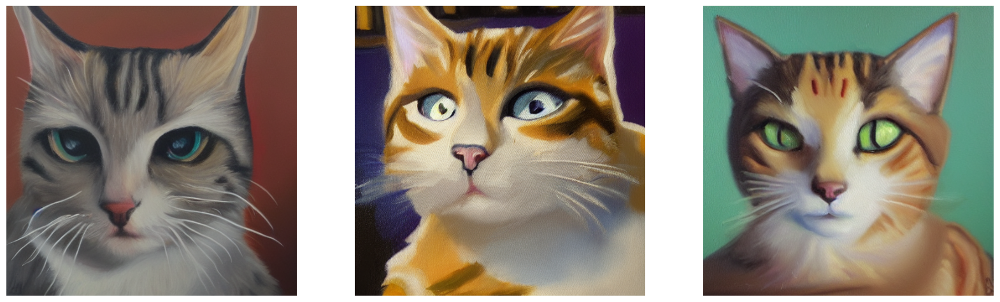
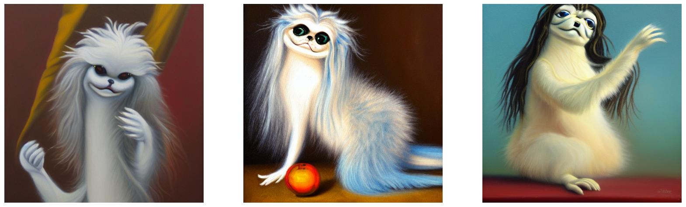
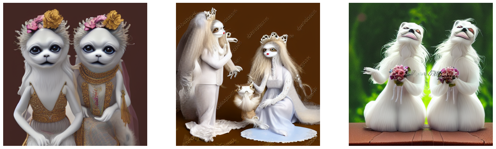
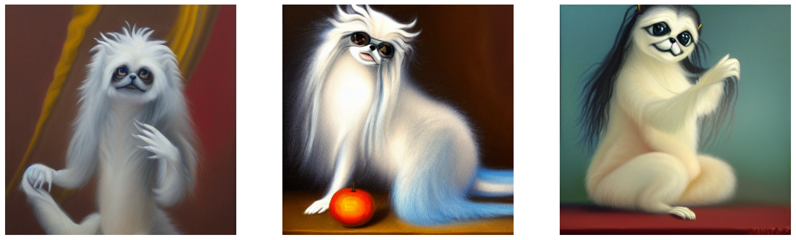
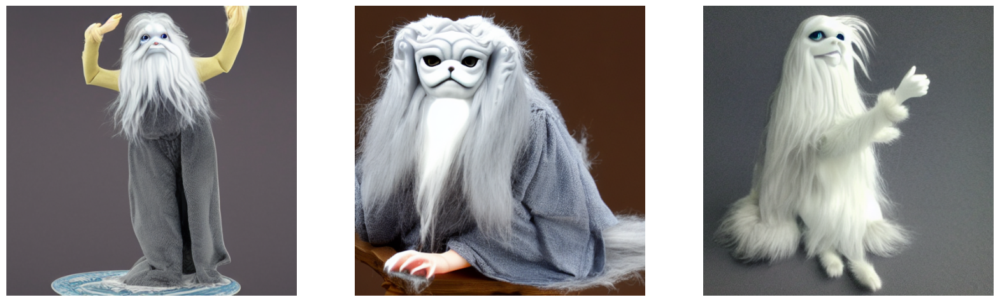
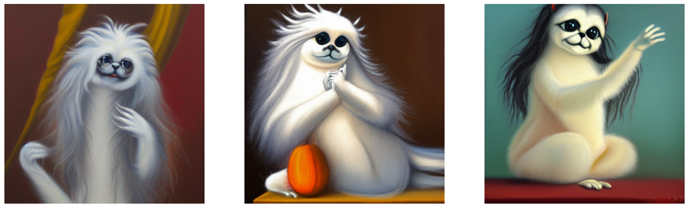
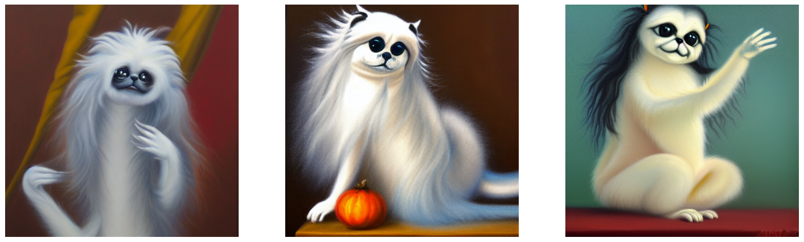
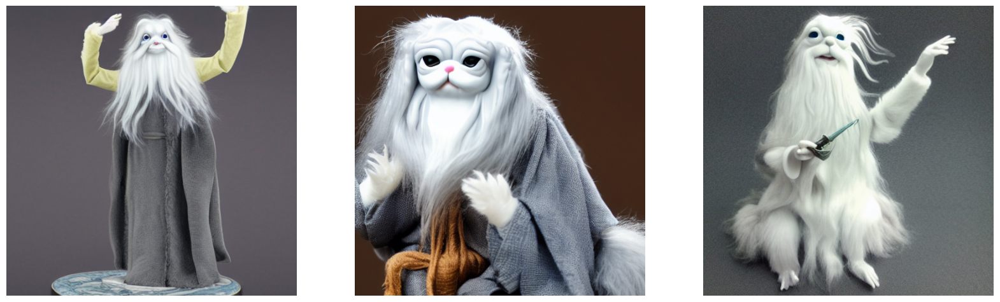
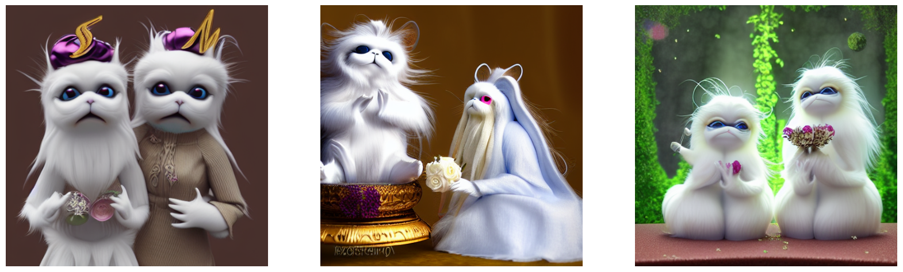
It's pretty fun to see how the model learns our new token over time. Play around with it and see how you can tune training parameters and your training dataset to produce the best images!
Taking the Fine Tuned Model for a Spin
Now for the really fun part. We've learned a token embedding for our custom token, so now we can generate images with StableDiffusion the same way we would for any other token!
Here are some fun example prompts to get you started, with sample outputs from our cat doll token!
generated = stable_diffusion.text_to_image(
f"Gandalf as a {placeholder_token} fantasy art drawn by disney concept artists, "
"golden colour, high quality, highly detailed, elegant, sharp focus, concept art, "
"character concepts, digital painting, mystery, adventure",
batch_size=3,
)
plot_images(generated)
25/25 [==============================] - 8s 316ms/step
generated = stable_diffusion.text_to_image(
f"A masterpiece of a {placeholder_token} crying out to the heavens. "
f"Behind the {placeholder_token}, an dark, evil shade looms over it - sucking the "
"life right out of it.",
batch_size=3,
)
plot_images(generated)
25/25 [==============================] - 8s 314ms/step
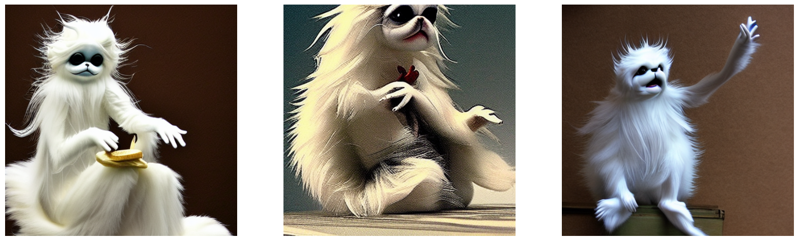
generated = stable_diffusion.text_to_image(
f"An evil {placeholder_token}.", batch_size=3
)
plot_images(generated)
25/25 [==============================] - 8s 322ms/step
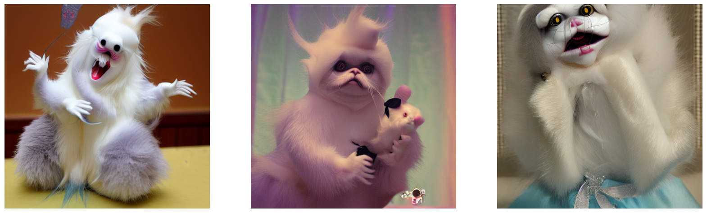
generated = stable_diffusion.text_to_image(
f"A mysterious {placeholder_token} approaches the great pyramids of egypt.",
batch_size=3,
)
plot_images(generated)
25/25 [==============================] - 8s 315ms/step
Conclusions
Using the Textual Inversion algorithm you can teach StableDiffusion new concepts!
Some possible next steps to follow:
- Try out your own prompts
- Teach the model a style
- Gather a dataset of your favorite pet cat or dog and teach the model about it